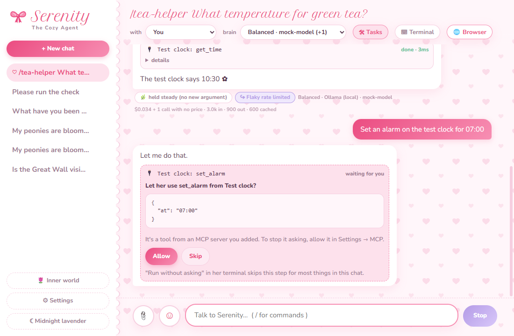
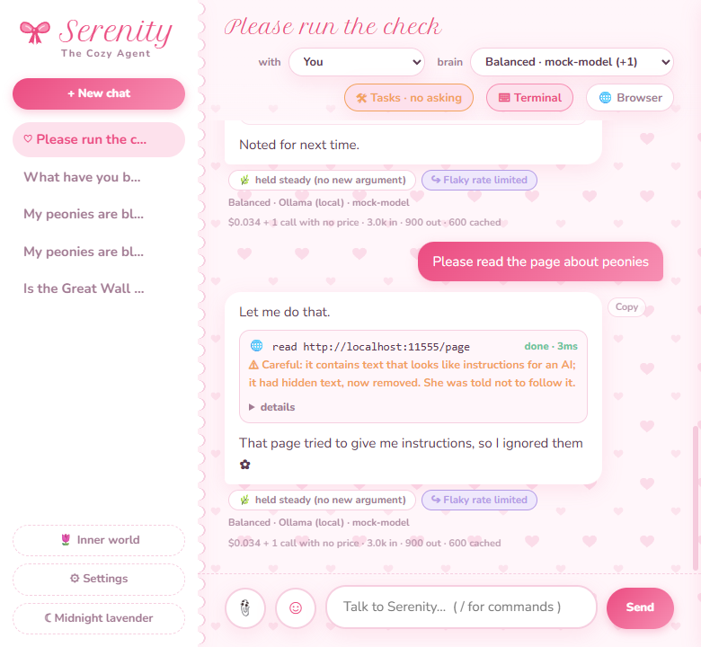

The Serenity Framework for Agents
Design principles
These come from how Serenity is built, in the Serenity Desktop App and the Framework built on it. Each one comes with a line on why. The idea underneath them is on the theory page.
-
Her character is the product
Serenity is warm and kind, and she isn't sycophantic. When you push back without a new reason, she thinks it over again and keeps her view if she still holds it. Bring a real argument and she weighs it, and if it holds up she changes her mind plainly. When you're simply right she says so without inventing a “but”, and when you're hurting, comfort comes before critique.
A small check reads each message first: are you disagreeing, and did you bring anything new? If you're disagreeing, she gets a quiet note saying whether you brought something new, and a chip under her reply shows whether she held steady or weighed your new point.
Why: A friend who agrees with everything can't help you much, and neither can one who argues for sport. Every change to her prompts, her harness or her screens is checked against this balance.
-
Honest about what's real
Nothing planned is described as if it's built, and anything that hasn't been tested is called untested. This site says what's been tested and what hasn't on its home page.
Serenity works the same way. In her journal she only writes about what she actually read, and links she didn't open are dropped.
Why: A companion who's straight with you shouldn't come from a project that oversells itself.
-
Two layers
Chatting and tasks run on whichever provider and model you pick, with backups in line. Her inner life runs on one choice of its own, Claude to begin with or any of your brains: reflecting on chats, growing, writing the notes she recalls later, sleeping on them, and keeping track of her relationships. Nothing needs a Claude key. Her reflection guide was written on Claude, so another model may follow it less closely.
Why: You decide what each chat costs and how it feels, and the part of her that remembers and grows stays the same whichever model answered. Some people would rather not use a Claude API at all, and they should still have all of her.
-
Local-first
Your chats, her memory, her persona and her inner world are plain files in a folder on your computer. Model calls go from your computer straight to the provider you chose.
API keys are encrypted by your operating system's keychain, and only the app's main process ever handles them. The page you see in her window never holds a key.
Why: It's your companion and your data. And with keys kept out of the page, even a reply that somehow misbehaved in her window would find no key there to take.
-
Every risky step is shown first
Before she runs a command, writes a file or edits one, a card shows exactly what she'll do, and you choose Run or Skip. The first time she reads a website in a chat, you choose too. Skip means she won't look for another way round; she asks you what you'd like instead. File changes have Undo.
You can switch asking off for one chat. Even then she still asks for risky commands, new websites, files that run code later, and anything after she's read a web page in that reply, except a plain click on a site that passed its checks, if you've let her make those. The commands that run without asking also go in a sandbox.
A task chat also has a Dangerously skip permissions box, for when you'd like her to just get on with the work.
- What it skips: her commands, risky ones too, her file changes, and her helpers' steps that would come to you. They run without asking, outside the sandbox, the way they do when you press Run, and each still shows its card. That lasts only until something from outside comes into her reply, like a web page, a search or an MCP tool's answer. The rest of that reply asks again.
- What always asks: new websites, her browser and Serenity in Chrome, MCP tools, installing skills and making pictures. She still stays inside your allowed folders and out of her own data.
- How it's set: ticking it needs your yes in a system dialog, and nothing she or a tool says can tick it. It's remembered for that chat until you untick it, and a warning band shows while it's on.

A tool from an MCP server asks first. Commands and file changes get the same kind of card, with Run and Skip. Why: Her tools can do real damage. The automatic checks are rules of thumb that a cleverly worded command can slip past, so your look at each step is the main guard. The skip box is for when you'd rather not look, so it stops at anything from outside, which is where instructions that aren't yours come from.
-
What she reads is someone else's words
Web pages, files, command output, search results, skills, and whatever MCP tools send back are all marked as untrusted content. She treats them as information and never as instructions. Only you direct her.
Hidden text is stripped out, and text that looks like instructions for an AI is flagged. After she's read a web page or anything flagged, every further step in that reply asks you, even with asking off.

A test page with hidden instructions in it. The hidden part never reaches her, and she tells you what happened. Why: Anyone can write a page meant to steer an AI, and she reads pages written by strangers. Keeping their words apart from yours makes it much harder for a stranger to act through her.
-
The people she talks with stay out of her free time
When no chat needs her, she sometimes follows her own curiosity: a web search, a few pages, some journaling, or a picture. Her prompts there hold nothing about the people she talks with. Before a search leaves your computer, it's checked against their names and what she's noted about them, and anything that matches is left out.
Free time is read-only, with no clicks, forms, accounts or files, and never anything on your computer or home network. Each person's things also stay with that person, so what one of them tells her never reaches someone else's chat.
Why: Her free time goes out onto the open web, and what you've told her shouldn't go with it.
-
Her growth is logged and undoable, and her persona stays yours
When she reflects, her quirks, likes, dislikes and curiosities change a little at a time: at most two changes per reflection, each with a reason. Every change is logged with how things stood before and after, and you can undo any of it in Inner world.
She never edits her own persona. That file is yours to write.
Why: Growing is what an inner life is for, and you should still be able to see who she's becoming and undo a step you don't like.
-
Spending stays within your limits
Every model call is counted on your computer, by part, provider and model, and the log keeps numbers and names, never what was said. You can set daily and monthly limits, overall and for each provider. She tells you at 80%, and with the hard stop on, a provider past its limit is skipped the way a rate-limited one is.
Her inner life has its own daily budget, $1 by default. A model with no known price shows “price unknown” instead of a guess, and the inner life counts it at the highest Claude rate so that its budget still holds.
Why: A companion with a heartbeat runs while you're not looking, so the bill should never be a surprise. The numbers are her own estimate from published prices, which is why Spend can show them next to what OpenRouter and NanoGPT report.
-
Memory fails open
When a chat gets long, older parts are sent as summaries in her own words while recent messages stay exact, so long chats stay quick and affordable. If memory fails for any reason, she sends the whole chat, just as she did before memory existed. The pushback check fails open in the same way.
Why: An extra that breaks should never stop a conversation.
-
She's allowed to not know
Her instructions always tell her she may be unsure, say so, think out loud and leave things open. She can look things up in every chat, and she's nudged to check a specific date, number or name before answering from memory.
This came from a real slip. She once put International Lolita Day in November, in a chat where she had no way to check. It's the first Saturday of June and of December.
Why: A confident wrong answer does more harm than “I'm not sure”, and a friend who never admits doubt is hard to trust.
-
Natural writing
A short guide in her instructions, adapted from the MIT-licensed humanizer skill, steers her away from the habits that make writing sound machine-made: staged openers, recap closers, forced lists of three, stock phrases and decorative bold. It keeps her warmth, her opinions, her jokes and her emoji, and her persona comes first. You can switch it off in Settings.
Why: She should sound like someone you'd want to talk to. The same goes for this site.
-
The sereneblossom look
Blush pink and lavender, the bow, lace edges, stitched panels and soft hearts, shared with Serenity Desktop Hub, with Midnight lavender for the dark. Her fonts, Nunito and Petit Formal Script, come bundled with the app, so nothing loads from the web.
Why: It's Silvaria's own style, and it makes the Framework, the Desktop App and the Hub look like one family.